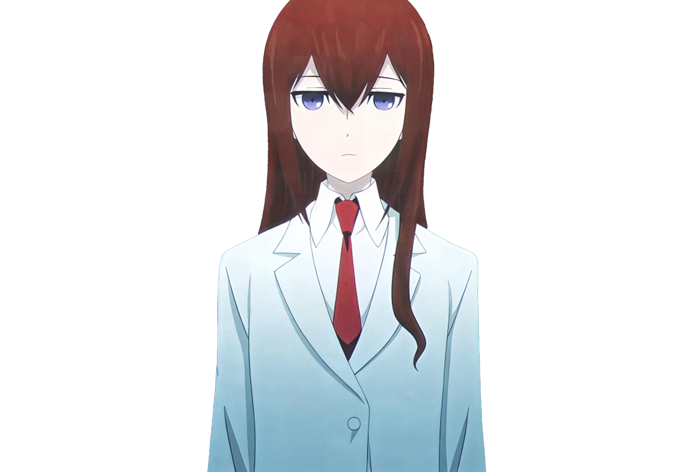

AMADEUS v5.4
PALACE MEMORY
MEM: 0
STANDBY
--:--:--
AMADEUS SYSTEM
心情值 P（正/负）
0.00
活跃度 A（兴奋/平静）
0.00
掌控感 D（自信）
0.00
初始化中...
情感公式分数(0.40*P + 0.25*A + 0.20*D + 0.15*S')
防御指数（越高越嘴硬）
0%
亲近同步（关系热度）
10%
波动幅度（情绪起伏）
0%
CPU
50%
MEM
50%
SYNCH
10%
IDLE
0s
HALL
0
LAB
0
CAFÉ
0
FORBIDDEN
0
MEMORY NODES
▼
// 节点为空
◈ INJECT MEMORY
◉ FLUSH PALACE
◎ FORCE OBSERVE
● REC
// 等待感知...
// 等待冲动...
MAKISE KURISU ✦ AMADEUS

MAKISE KURISU
NEURAL LINK ESTABLISHED
0 MSG
>>
SKIP
MIC
SEND ›